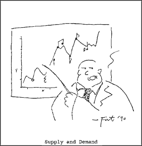

|

Lunch With The Fat Man #2
Practical advice for musicians and would-be musicians. But it's not just about the music. It's about life. It's about art. It's about lunch! Let's eat!
- - - - - - - - - -
by George Alistair Sanger
Installment index
"Supply and Demand"
Hi. Sit down. What are you having? Welcome to Lunch With The Fat Man.
When the movie Top Gun was released, Air Force enlistment quadrupled...skyrocketed, you should pardon the expression. Army enlistment did well, also, when the Rambo movies came out. The "Be All You Can Be" ad campaigns, I hear, are very effective as well for getting our young men and women to join the service. Let me mention here that these aren't the best movies in the world, nor the best ad campaign.
Kind of makes you wonder what would happen to enlistment if the cable carried two stations that only ran great high-dollar ads for the Army, 24 hours a day. These ads would depict long-haired army men walking on the beach or relaxing in bed with beautiful women. Army women would be shown as masters of their own fate, wearing the latest fashions, telling their side of their life's story to adoring throngs. And what if 90% of what was on the radio was a glorification of these fighters? And variety shows, talk shows, and late-night comedy shows prized above all else the appearance of the week's guest sergeant. What if generals made salaries in the multi-millions? And what if boot camp were nothing more than staying up late playing guitar and drinking beer with a bunch of cool guys? Sounds as good as Amway, doesn't it? Maybe even better.
Well, such an army does exist. It's the Army of Rock and Roll. And my point, which should be clear by now, is that there's a hell of a lot of people in line at the recruiting office... possibly the entire population of the earth, give or take a percent.
That about covers the idea of "supply", as far as musicians go. Now let's discuss "demand."
Let's put it this way. When was the last time you had the irresistible urge to hire a musician?
Supply and demand issues are what cause most of the problems related to the music business. They are responsible for the disrepair of the myriad of beat-up VW's full of drum cases and amps that litter our nation's highways. They create litter (in the form of band fliers) that deface our otherwise lovely phone poles. And they are to blame for embarrassing personal ads such as:
 Wntd: Recrd lbl for origl bnd. Hv prfssnl atttd, gd lks, cntemprry hair, own equip and transp. If you are a recrd co-exec and are wlling to tk chance, we are rdy to rck the wrld!!! Call Marty at 555-5555, ask fr the ktchn. Aftr 2:00 AM, call 555-4321. Marty's mm isn't nto the bnd, so if a wmn answrs, hng up.
Clearly there is a glut of musicians, and no demand. But hark! Wait! Did I just write "musicians," and not "music?" Let me go back and check... Why, yes! So what would happen if we looked at the supply and demand of music instead?
Well, supply-wise, come to think of it, it is a bit tough to find good music. And, looking at demand... well, when was the last time you felt the need to hear some good music? Pretty recently, I’ll bet. And you paid for it, too, either by buying a record, paying for a concert, or by buying a product that was advertised on the radio or TV.
When you talk about good music, there does seem to be a difference between supply and demand. And, although it's not huge, a bit of a market is created by that difference. So how does the smart, talented musician take advantage of this? Same way any businessman uses a small market. Keep quality high, keep prices low.
Some ways to keep quality high:
Practice.
Make musical decisions (including band membership) based on what sounds good, not on what's easy.
Know your market. If you want to sell to a pop market, write pop songs. If you want to write commercials, mention the product name three times. If you want to be a creative, artistic individual, there's a market for that too, but you'd better be pretty damn creative and artistic, or you're only fooling yourself.
Some ways to keep prices low:
Keep your day job. That way you won't have to charge as much for your music to stay alive.
Practice so you can sound good on your own instrument, and won’t have to buy gimmicky equipment, thereby keeping your overhead down.
Don't give in to the idea that you can create the perception that you are good by raising your rates for gigs and studio sessions. If you are good, people will know it, and come to you on those few occasions that music is needed.
When your reputation for good work is established, you’ll be flooded with gigs to the point where your phone won't stop ringing. You won't be able to find time to eat, sleep, or escape from the screaming crowds of fans.
Then you can raise your rates.
Say, this was great. Let's have lunch more often.
 Next page | "Surviving the Music Store" Next page | "Surviving the Music Store"
1, 2, 3
|